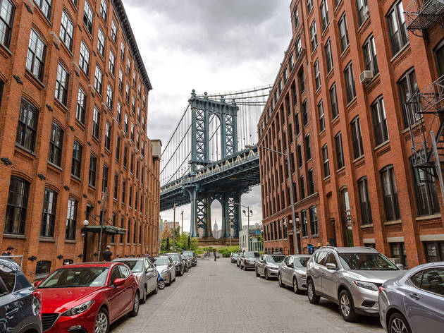
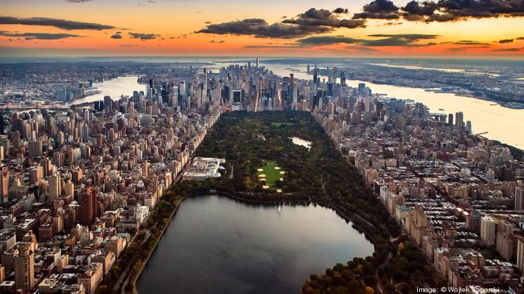
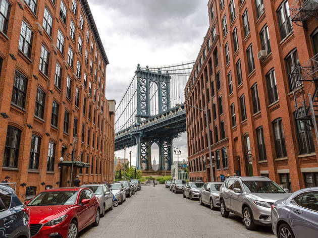
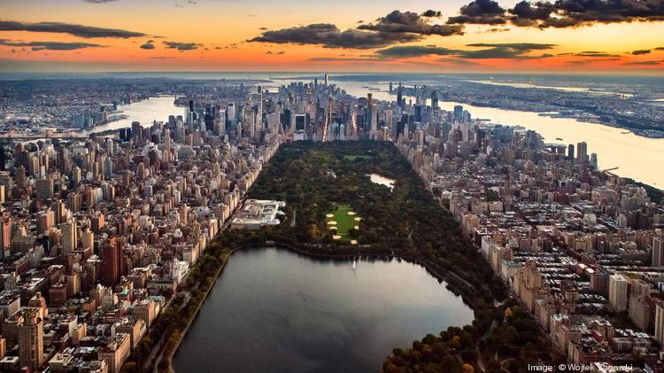
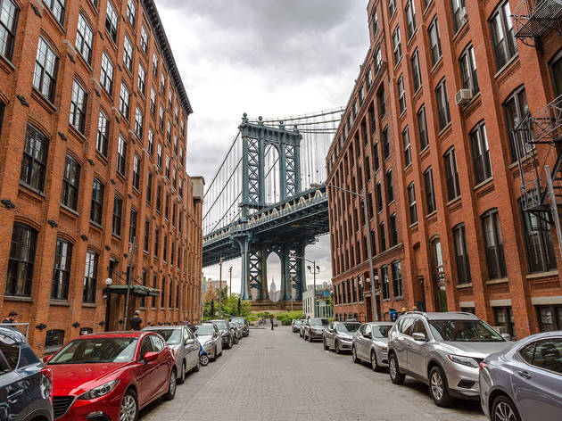
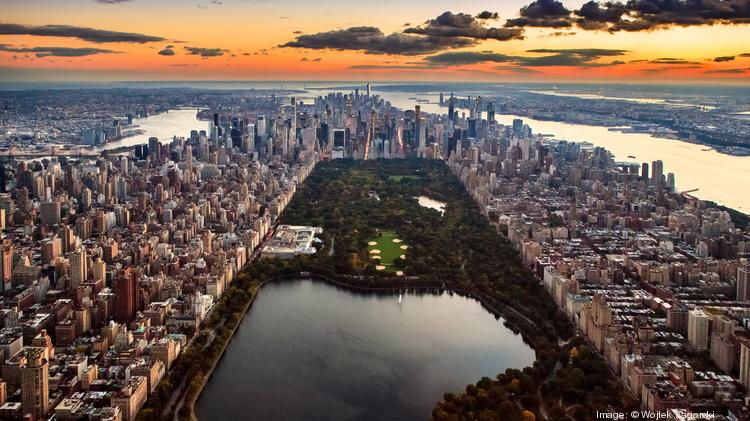
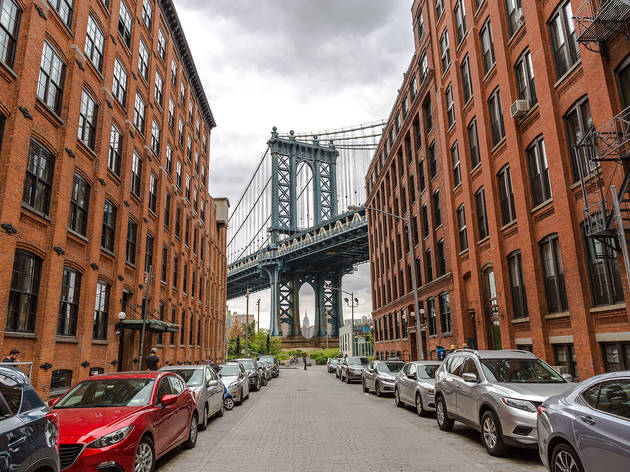
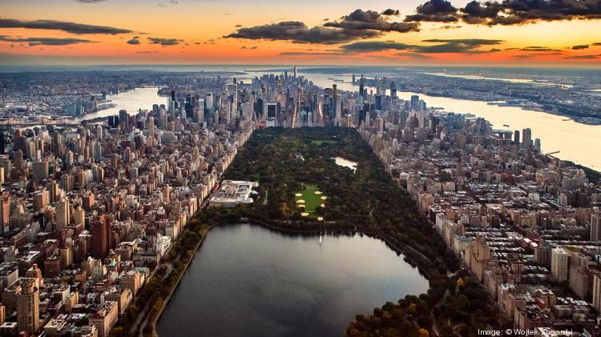

Manhattan, is the most densely populated of the five boroughs of New York City, and coextensive with the County of New York, one of the original counties of the U.S. state of New York. Manhattan serves as the city's economic and administrative center, cultural identifier, and historical birthplace. The borough consists mostly of Manhattan Island, bounded by the Hudson, East, and Harlem rivers; several small adjacent islands; and Marble Hill, a small neighborhood now on the U.S. mainland, that was connected using landfill to the Bronx and separated from the rest of Manhattan by the Harlem River. Manhattan Island is divided into three informally bounded components, each aligned with the borough's long axis: Lower, Midtown, and Upper Manhattan